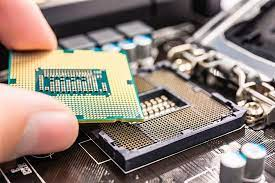
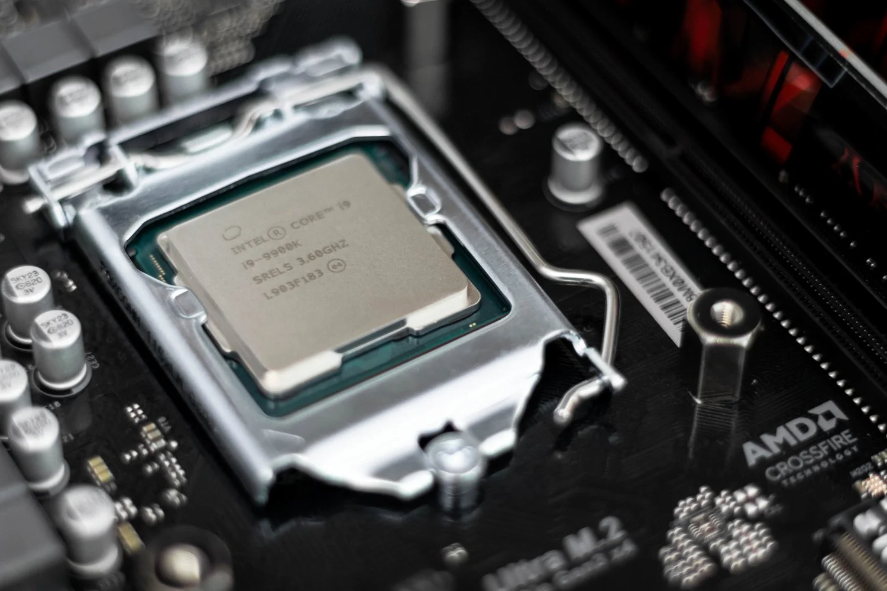
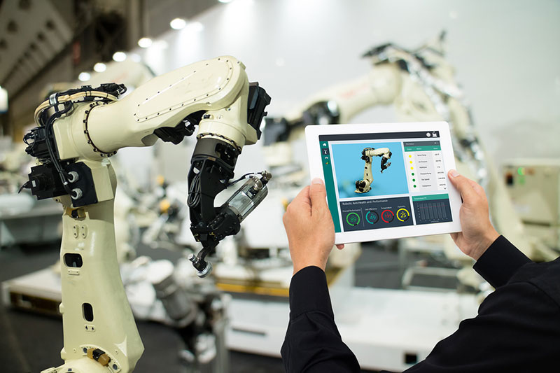
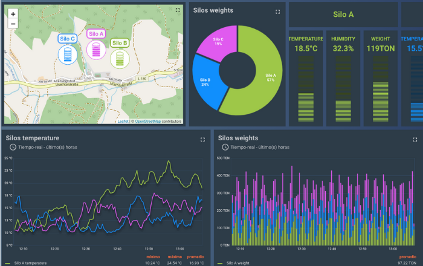
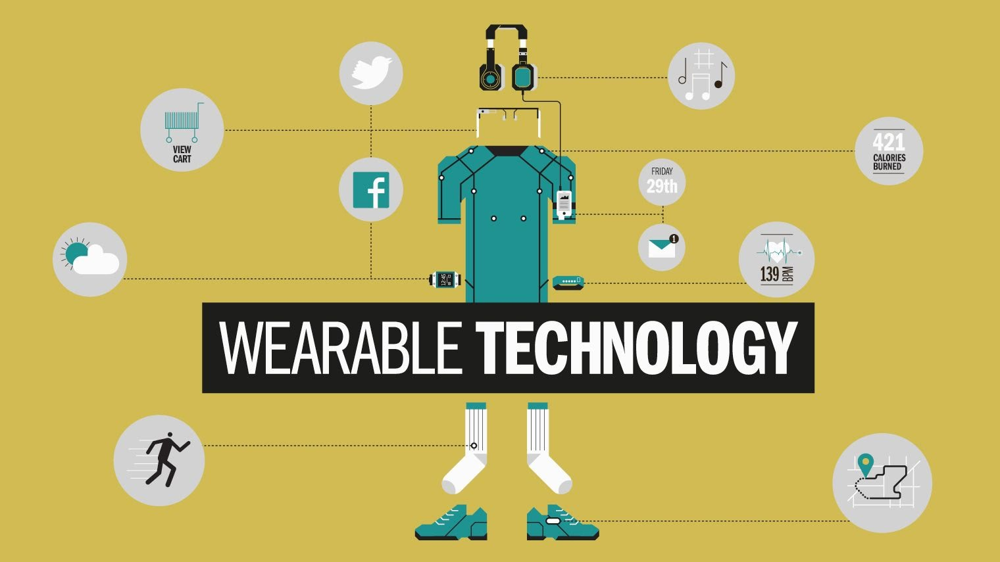
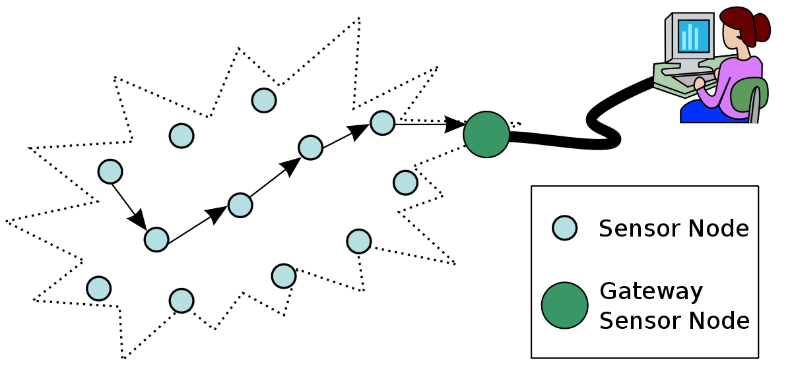

A lo largo de esta exploración, descubriremos casos de uso
concretos de IoT en diferentes industrias, destacando cómo
esta tecnología está transformando la forma en que trabajamos,
vivimos y experimentamos el mundo que nos rodea. Desde la
automatización agrícola hasta la movilidad urbana, veremos
cómo IoT está mejorando la eficiencia operativa, optimizando la
toma de decisiones y brindando servicios inteligentes que marcan
la pauta hacia un futuro más conectado y sostenible.

Adéntrate con nosotros en este fascinante viaje a
través de los ejemplos prácticos de IoT en diferentes sectores,
y descubre cómo la convergencia entre dispositivos inteligentes
y plataformas en la nube está transformando nuestra realidad y
abriendo nuevas posibilidades en un mundo cada vez más interconectado.
A continuación, se presenta algunos de los casos de uso concretos
de IoT en diferentes industrias:
Selección de Hardware para Proyectos IoT
Al seleccionar el hardware adecuado para proyectos IoT,
es importante tener en cuenta diversos factores para
garantizar que la solución sea eficiente, segura y escalable.
Aquí tienes algunos consejos y factores a considerar:

- Requisitos del Proyecto:
Comprende completamente los requisitos específicos del
proyecto IoT, incluyendo el tipo de datos que se recopilarán,
el alcance de la red, las capacidades de comunicación requeridas
y las tareas que deben realizarse.
- Conectividad:
Asegurarse que el hardware elegido sea compatible con las
tecnologías de conectividad necesarias para la aplicación,
como Wi-Fi, Bluetooth, Zigbee, LoRaWAN o celular.
- Consumo de Energía:
Evalúa el consumo de energía del hardware, especialmente
si los dispositivos IoT funcionarán con baterías o fuentes
de energía limitadas. Es importante que el hardware sea
eficiente en el uso de energía para prolongar la vida útil
de las baterías y reducir los costos operativos.
- Rendimiento:
Considera el rendimiento del hardware en términos de
velocidad de procesamiento, capacidad de almacenamiento
y capacidad de memoria. Asegurarse de que el hardware pueda
manejar la cantidad y complejidad de los datos requeridos.
- Facilidad de Programación y Desarrollo:
Evalúa la facilidad de programación y desarrollo del hardware.
Elije plataformas y lenguajes de programación que sean
familiares para su equipo o que tengan una comunidad de
soporte activa.
- Costo:
Analiza el costo del hardware y asegurando que se ajuste
a su presupuesto. Considera tanto el costo inicial de
adquisición como los gastos adicionales asociados con la
implementación y el mantenimiento.
- Soporte y Documentación:
Verificar si el hardware tiene una sólida base de soporte
y documentación, incluyendo manuales, tutoriales y foros
de comunidad. Esto será útil durante el desarrollo y la
resolución de problemas.
- Seguridad:
Asegurarse de que el hardware cuente con medidas de
seguridad adecuadas para proteger los datos y prevenir
posibles ataques cibernéticos. La seguridad es especialmente
crucial en proyectos IoT que manejan datos sensibles.
- Escalabilidad:
Considerar si el hardware es escalable para futuras
expansiones o actualizaciones del proyecto IoT.
La escalabilidad garantizará que su solución pueda crecer y
adaptarse a medida que cambien las necesidades.
- Integración con la Nube:
Verificar si el hardware es compatible con las plataformas
en la nube que se planea utilizar para almacenar y analizar
los datos. La integración sin problemas es esencial para
aprovechar al máximo el potencial de IoT.
- Certificaciones y Normativas:
Si el proyecto IoT está relacionado con una industria
regulada (como la salud o la automoción), asegurarse de que
el hardware cumpla con las certificaciones y normativas
necesarias.

Tomarse el tiempo para evaluar y seleccionar el hardware adecuado
es fundamental para el éxito de un proyecto IoT. Un hardware
bien elegido permitirá una implementación más suave y eficiente,
lo que llevará a una solución IoT más robusta y funcional en el
largo plazo.
A continuación, se presenta un cuadro comparativo entre varios
microcontroladores populares, resaltando sus características y
capacidades distintivas
Es importante tener en cuenta que cada microcontrolador tiene
sus propias ventajas y desventajas, y la elección del
microcontrolador adecuado dependerá de las necesidades
específicas de su proyecto. Al evaluarlos, considera factores
como la potencia de procesamiento, el consumo de energía, la
capacidad de memoria, las interfaces de comunicación y la
disponibilidad de soporte y documentación. Además, considera el
ecosistema y la comunidad de desarrollo detrás de cada
microcontrolador, ya que esto puede facilitar el proceso de
desarrollo y solucionar problemas.
Ejemplo: Función para evaluar el consumo de energía
Ejemplo: Función para evaluar la compatibilidad de la conectividad
Información
A continuación, se presenta una serie de ejemplos para saber
qué hardware escoger dependiendo de sus necesidades y
aplicaciones específicas:
Monitorización de Hogares Inteligentes:

Para proyectos de hogares inteligentes que involucran
el control de dispositivos y la monitorización del entorno,
microcontroladores populares como el ESP32 o el Raspberry
Pi son excelentes opciones. Estos ofrecen una combinación
de Wi-Fi y Bluetooth, lo que les permite conectarse y
controlar una variedad de dispositivos inteligentes.
Aplicaciones Médicas y de Salud:
Para dispositivos médicos portátiles y aplicaciones
de salud, microcontroladores con bajo consumo de energía y capacidad de
procesamiento como el STM32L4 o nRF52840 son apropiados. Estos permiten un
monitoreo continuo y preciso sin agotar rápidamente las baterías.
Automatización Industrial:

En aplicaciones industriales que requieren un
rendimiento robusto y una alta capacidad de procesamiento, los microcontroladores
de la familia STM32F4 de STMicroelectronics o los PIC32 de
Microchip son adecuados. Estos ofrecen velocidades de reloj más altas y una mayor
memoria para soportar aplicaciones complejas.
Sistemas de Control en Tiempo Real:

Para sistemas de control en
tiempo real que necesitan una respuesta rápida y precisa,
los microcontroladores con unidades de control de
interrupciones dedicadas y DMA (Acceso directo a memoria),
como el Arduino Due o nRF52832, son recomendados.
Dispositivos de Wearables:

Para dispositivos ponibles o
wearables, el nRF52840 o el ESP32 son opciones adecuadas
debido a su tamaño compacto, bajo consumo de energía y
funcionalidades inalámbricas integradas.
Aplicaciones de Sensores en Red:

Para aplicaciones que requieren
una amplia distribución de sensores en una red de área
extensa, los dispositivos con tecnologías de baja potencia
y largo alcance, como LoRaWAN, son ideales. Ejemplo:
Dispositivos basados en LoRaWAN como el Dragino LGT-92 que
ofrecen larga duración de batería y alcance de varios
kilómetros.
Recordar que la elección del hardware depende en gran medida de
los requisitos específicos del proyecto, como el tipo de
conectividad necesaria, el consumo de energía, el alcance de
la red, la capacidad de procesamiento y las interfaces de
comunicación requeridas. Realizar una evaluación detallada de
las necesidades de la aplicación permitirá seleccionar el
hardware más adecuado para alcanzar tus objetivos en proyectos de IoT.
Recursos y comunidad
Para que sigas con el proceso de aprendizaje, acá tienes
información sobre algunas plataformas y comunidades en línea
donde los visitantes pueden aprender más y conectarse con otros
entusiastas de IoT:
- Arduino:
Es una plataforma de código abierto muy popular para
proyectos de IoT y electrónica en general. Cuenta con una
gran comunidad en línea donde los usuarios pueden acceder a
tutoriales, proyectos, foros de discusión y documentación
detallada. Es ideal para principiantes y ofrece una amplia
gama de placas y sensores para proyectos IoT.
Visita:
Arduino
- Raspberry Pi:
Es otra plataforma de código abierto que ofrece computadoras
de placa única asequibles y potentes. Tiene una comunidad
activa que comparte proyectos y guías, ofrece una gran
cantidad de recursos educativos y técnicos. Raspberry Pi es
ideal para proyectos más complejos que requieren capacidades
de computación más avanzadas.
Visita:
Raspberry Pi
- Hackster.io:
Es una plataforma en línea que reúne a la comunidad de entusiastas
de IoT, electrónica y desarrollo de hardware. Los usuarios pueden
explorar proyectos, compartir sus creaciones y aprender de otros
miembros de la comunidad. También ofrece desafíos y competiciones
para fomentar la innovación y la colaboración.
Visita:
Hackster.io
- Instructables:
Es una comunidad en línea donde los entusiastas pueden compartir
guías detalladas paso a paso sobre una amplia variedad de
proyectos, incluidos proyectos de IoT. Los usuarios pueden
aprender a través de tutoriales y también publicar sus
propios proyectos para compartir con la comunidad.
Visita:
Instructables
- Element14:
Element14 es una comunidad de desarrolladores y diseñadores
que se enfoca en la electrónica, IoT y proyectos de código
abierto. Ofrece discusiones técnicas, blogs, videos,
webinars y desafíos para fomentar la colaboración y el
aprendizaje entre los miembros.
Visita:
Element14
Estas plataformas y comunidades en línea ofrecen una excelente
oportunidad para aprender más sobre IoT, obtener inspiración
para proyectos y conectarse con otros entusiastas y expertos
en el campo. Son valiosos recursos para aquellos que buscan
ampliar sus conocimientos y contribuir a la creciente
comunidad de Internet de las cosas.
Ejemplo: Monitorización de Hogares Inteligentes utilizando ESP32 (Python)